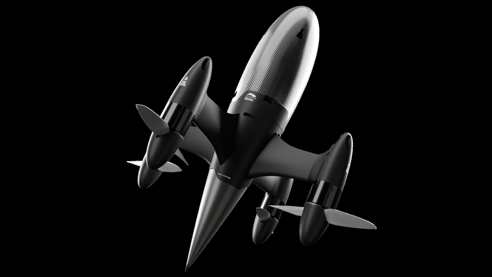
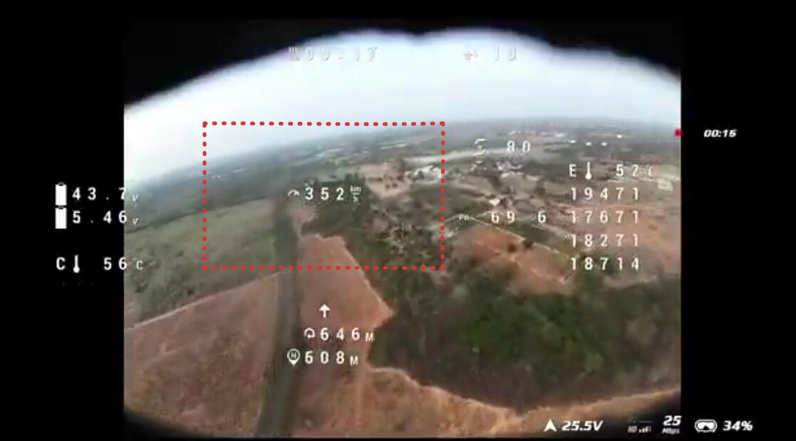

Ahuti interceptor, first contact, unmanned
A high-speed electric interceptor engineered to destroy hostile reconnaissance drones and loitering munitions. Engineered for the 400 km/h speed band, Ahuti Mk II delivers hard-kill kinetic interception at expendable quadrotor economics.

What Ahuti is for
Modern counter-UAS operations face an untenable cost asymmetry. Hostile reconnaissance drones and Shahed-class loitering munitions cost between ₹5 lakh and ₹20 lakh. Traditional ground-based air defences intercept them with surface-to-air missiles costing ₹10 crore to ₹25 crore per round. Defending airspace with exquisite missiles exhausts budgets and magazines long before the adversary exhausts expendable airframes.
Ahuti resolves this asymmetry. Weighing 3 kg, this vertical-launch electric interceptor operates in the 400 km/h speed band to intercept loitering munitions and tactical UAVs. Cued by external radar or optical sensors, Ahuti navigates autonomously toward the target track before an onboard imaging seeker executes terminal collision. At a target unit cost of ₹10–15 lakh (≈$11–16k), it restores economic equilibrium to tactical air defence.
Ahuti Mk II is currently in pre-production flight testing. While operating on a distinct physical architecture from Apollyon's winged cruise missiles, it demonstrates the company's hardware-in-the-loop iteration velocity, advancing from clean-sheet design to frontline proving ground trials in under a year.
Progress across the family
In late 2025, the initial prototype reached 180 km/h. To counter high-speed loitering munitions, Apollyon focused on the 400 km/h threat band, restructuring the airframe around extreme discharge rates and high-rate rotorcraft dynamics. Five flight standards followed inside eight months: 180 km/h on Build 1, 282 on Build 2, 337 on Build 3, 352 on Build 4, and 498 on the Mk II sprint testbed in September 2026. Each standard advanced through wind tunnels and proving-ground trials, validating control authority and structural margins across the 400 km/h operating envelope.
Development relied on tight hardware-in-the-loop flight testing. Dedicated high-speed test pilots pushed each iteration to thermal and structural limits at military proving grounds, including Babina and Gopalpur with the Indian Army. Flight telemetry fed dynamic parameter identification directly back into the control policy, refining motor commutation and propeller geometry across ten configurations.

Ahuti Mk II, in full
From cue to impact
The cost exchange, and the honest comparison
The global interceptor market spans four archetypes: expendable manual quads, engineered procurement-grade kinetic rounds, missile-class interceptors, and reusable physical nets. Ahuti combines the procurement-grade guidance of engineered missiles with the manufacturing economics of high-rate quadrotors.
Compared to peers like the Osiris UEB-1 (3.1 kg, 315 km/h, 18 km range), Ahuti trades loiter endurance for terminal speed, closing on fast loitering munitions that evade slower multirotors. Against procurement-grade systems like the MARSS Interceptor ($30,000–$40,000), Ahuti delivers higher terminal velocity at one-third the mass, at a target price of ₹10–15 lakh (≈$11–16k). Command-and-control integration operates through established consortia architectures, allowing plug-and-play operation with existing air-defence radars. The full interceptor matrix →
A legacy interceptor costs fifty to five hundred times the airframe it is fired at. Matched against a ₹10–15 lakh round, the defence pays close to what the attack does per engagement, and the exchange stops running against the defender.
Status and routes to market
- Flight status: Mk II flying; five flight standards in eight months; 498 km/h national record on the sprint testbed; fastest platform at the AADC Gopalpur trials; operational rounds tuned to the 400 km/h band.
- Pilot order: A pilot purchase order is signed with Raphe mPhibr for co-development on the Ahuti line, covering terminal guidance and radar-based cueing through 2026.
- Procurement route: Structured under IDDM Make-II, positioning the interceptor as an attritable kinetic munition supplied to integrated air-defence prime contractors, with a first mass-production tranche planned for 2027 alongside private sales.
- DKS project: Leading contender in the Indian Army's DKS counter-drone programme with DGAAD and Raphe mPhibr, with Cassiopeia Design & Engineering fronting the bid. Partner systems supply search radar and fire-control C2, while Apollyon delivers the kinetic round.
- Operational customers: Active evaluation with the Indian Army and Border Security Force (BSF). Non-lethal kinetic configuration offers expedited bilateral export pathways.
Why Ahuti is a separate architecture
While the Nightshade family runs a common cruise guidance runtime, Ahuti deploys a distinct rotorcraft flight architecture dictated by extreme electric dynamics. Vertical-launch quadrotors operating in the 400 km/h band push motors, blades, and batteries to their extraction limits. Holding control authority through those transients demands its own rotorcraft control configuration: tight gain schedules, envelope limits and actuator allocation.
Ahuti inherits engineering methodology rather than a configuration lineage from the strike portfolio: high-fidelity simulation grounded in real flight data, continuous envelope expansion, and rapid hardware-software iteration. The method and the shared core →